Fecha de actualización: 22 de Mayo 2020 14:00 Elementos actualizados se muestran resaltados en VERDE

PROCESO DIRECCIÓN DE FORMACIÓN PROFESIONAL INTEGRAL
FORMATO GUÍA DE APRENDIZAJE
IDENTIFICACIÓN DE LA GUÍA DE APRENDIZAJE
-
Denominación del Programa de Formación: TECNÓLOGO EN AUTOMATIZACIÓN INDUSTRIAL
-
Código del Programa de Formación: 224208
-
Nombre del Proyecto: DISEÑO Y CONSTRUCCIÓN DE MÓDULOS DE ENTRENAMIENTO PARA LA AUTOMATIZACIÓN DE PROCESOS INDUSTRIALES
-
Fase del Proyecto: EJECUCIÓN
-
Actividad de Proyecto: Mejoro el funcionamiento de máquinas y procesos buscando su eficiencia y productividad.
-
COMPETENCIA : 4775 - MEJORAR EL FUNCIONAMIENTO DE MÁQUINAS. Y PROCESOS ,BUSCANDO SU EFICIENCIA Y PRODUCTIVIDAD
-
Resultados de Aprendizaje Alcanzar: 17842 - REALIZAR PROTOTIPOS PARA AUTOMATISMOS.
-
Duración de la Guía: 16 horas
PRESENTACIÓN:
Esta guía se constituye en un documento orientador de tu proceso de formación, por lo tanto se recomienda:
- Leerla, comprenderla y aplicarla antes de realizar cualquier acción.
- El tiempo para la entrega de actividades será de acuerdo al plan de formación.
- Las actividades iniciales de la guía podrán ser grupales, pero la elaboración de los productos será individual.
- Revise la bibliografía sugerida para ampliar sus conocimientos
- Las evidencias de conocimiento se tomarán de acuerdo al desarrollo de la guía.
FORMULACIÓN DE LAS ACTIVIDADES DE APRENDIZAJE
En esta guía se orientara el proceso del diseño y construcción de un sistema contador decimal manual y automático con visualización en un display 7 segmentos
1. Descripción de los Componentes
DECODIFICADOR 7447 Y DISPLAY 7 SEGMENTOS
Este decodificador se aparta de la definición general ya que cada combinación de valores de las entradas activa varias salidas, en lugar de una sola. Tiene cuatro líneas de entrada en código BCD (Decimal codificado en binario) y salidas capaces de excitar un display de siete segmentos para representar cualquier dígito de 0 a 9.
Un display siete segmentos no es mas que un dispositivo opto-electrónico que permite visualizar números del 0 al 9.En la siguiente figura se nuestra el display 7 segmentos
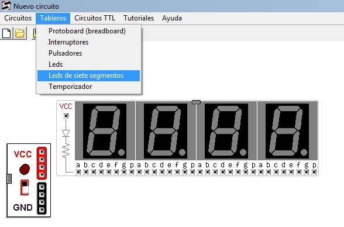
Existen dos tipos de segmentos unos que se activan con un uno "1", llamado display de 7 segmentos de cátodo común, y otro cuyos segmentos se activan con un cero "0", llamado display de 7 segmentos de ánodo común.
De la misma forma que hay dos tipos de decodificadores existen dos
tipos de display de 7 segmentos y es evidentemente que tanto
el decodificador y display tienen que ser del mismo tipo para
poder ser conectados.
Los displays de 7 segmentos son dispositivos que se utilizan para
visualizar información. Cada segmento de un display está constituído
por un LED que, al activarse, es decir, cuando circula una corriente
a través suyo, se ilumina. El tipo de conexión de estos LED es lo
que determina si el display de 7 segmentos es de ánodo común o de
cátodo común.
A continuación se muestra una imagen de lo que sería un
decodificador BCD de 7 segmentos, 7447. Podemos observar que tiene
16 "pines", de los cuales 4 son entradas, 7 son salidas, 2 son de
alimentación y 3 son de funcionamiento del propio decodificador.
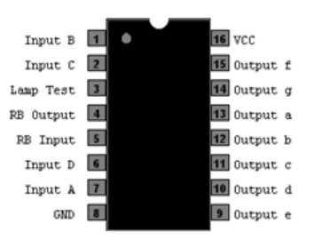
Donde las Input son entradas marcadas con A B C D y Output que son salidas marcadas con a b c d e f g que se conectan al display
descarga del datasheet del integrado 7447 click
A continuación se muestra la localización del decodificador en el simulador
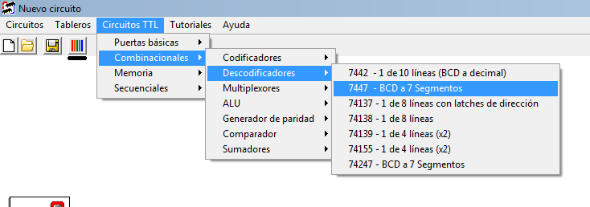

CONTADOR 7490
El 7490 es un contador asíncrono de décadas con salida BCD en binario, este contador cuenta los flancos de bajada de los pulsos que ingresen por su pin 14, se mueven las 4 salidas del contador para contar en binario de 0 en BCD (0000) hasta 9 en BCD (1001). Para el funcionamiento de contador debemos conectar los pines 2, 3, 6 y 7 a tierra, pero si deseamos resetear el contador (poner el contador a cero) podemos conectar los pines 2 y 3 a un nivel alto (1 lógico)
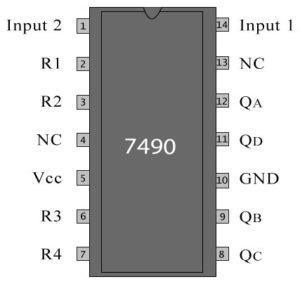
A continuación se muestra la localización del contador en el simulador
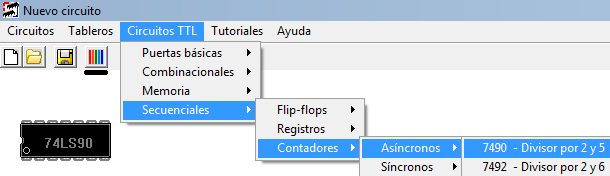
2.
Sistema de conteo
Lo primero que vanos a realizar es la prueba del decodificador y el 7 segmentos realizando las entradas forma manual usando los interruptores del simulador realizando el montaje de la siguiente manera
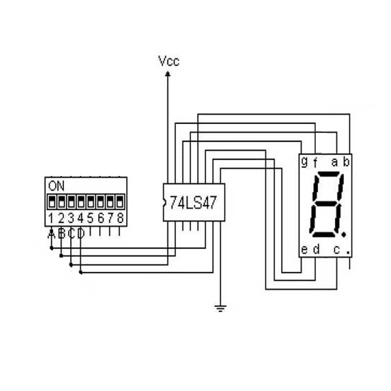
Quedando el montaje en el simulador constructor virtual de la
siguiente manera
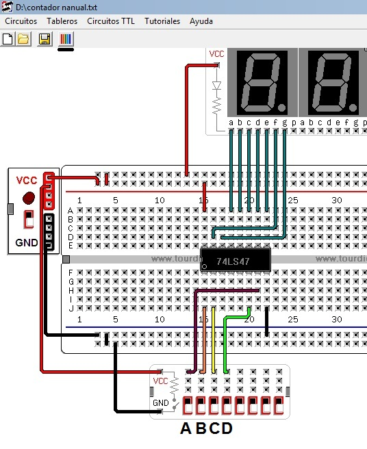
Una vez realizado el montaje usando los interruptores 1 2 3 4 o A B C D realizaríamos la prueba insertando cada combinación de la tabla de la verdad
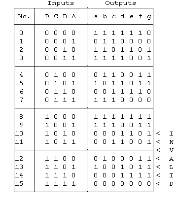
Después de realizar la prueba del montaje vamos a configurar el contador haciendo uso del contador 7490 para codificar las entradas del sistema quedando de la siguiente manera
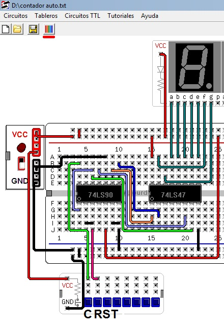
Donde C entrada de conteo y es un pulsador que en su estado normal envía 0 al circuito y que al pulsarlo manda un 1 al circuito 7490 por el pin 14
El RST es un pulsador que en su estado normal envía 0 al circuito y que al pulsarlo manda un 1 al circuito 7490 por los pines 2 y 3 y cumple la función de RESET del conteo
Finalmente vamos a realizar un conteo que sea automático, en los casos prácticos usaríamos un oscilador astable construido con un circuito integrado 555 que actuaría como un generador de ondas, que se caracteriza por una salida con forma de onda cuadrada de ancho definido por el diseñador. La frecuencia de la onda saliente se puede controlar mediante la resistencia conectada entre los pines 7-8 y 2-7 además del condensador electrolítico conectado al pin 2 y negativo. En la figura que se muestra a continuación se tiene la configuración del 555 cono astable
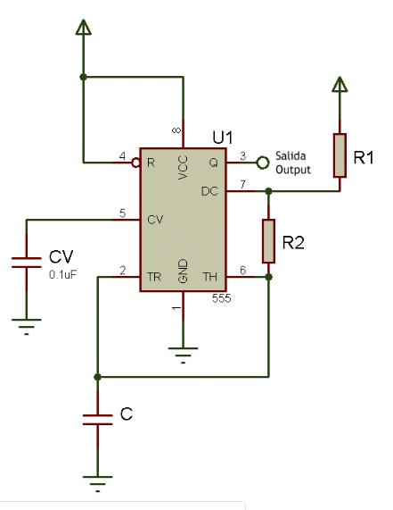
En este link encontraras una calculadora virtual de circuitos Astables para definir la frecuencia de oscilación link
Para simular el contador automático en el constructor virtual vanos
a usar un generado pulsos o temporizados cono el que se muestra a
continuación
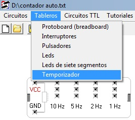
Quedándonos el circuito de la siguiente manera

|
Evidencias de Aprendizaje |
Criterios de Evaluación |
Técnicas e Instrumentos de Evaluación |
|
Evidencias de Conocimiento : Evidencias de Desempeño Evidencias de Producto: |
Cumple con el procedimiento realizado |
Lista de Chequeo |
5. GLOSARIO DE TÉRMINOS
6. REFERENTES BIBLIOGRÁFICOS
Construya o cite documentos de apoyo para el desarrollo de la guía, según lo establecido en la guía de desarrollo curricular
7. CONTROL DEL DOCUMENTO
|
Autor |
Cargo |
Dependencia |
Fecha |
|
|
JHONN SUACHA |
INSTRUCTOR |
SENA |
|
|
8. CONTROL DE CAMBIOS (diligenciar únicamente si realiza ajustes a la guía)
|
|
Nombre |
Cargo |
Dependencia |
Fecha |
Razón del Cambio |
|
Autor (es) |
|
|
|
|
|
·
· ·
·
·